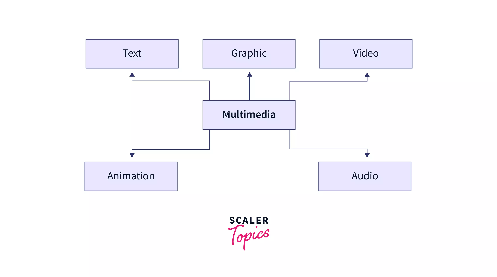
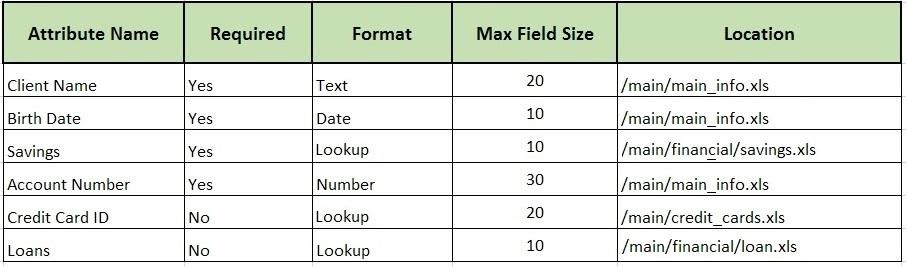
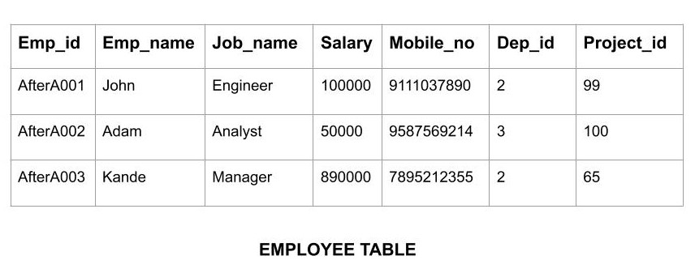
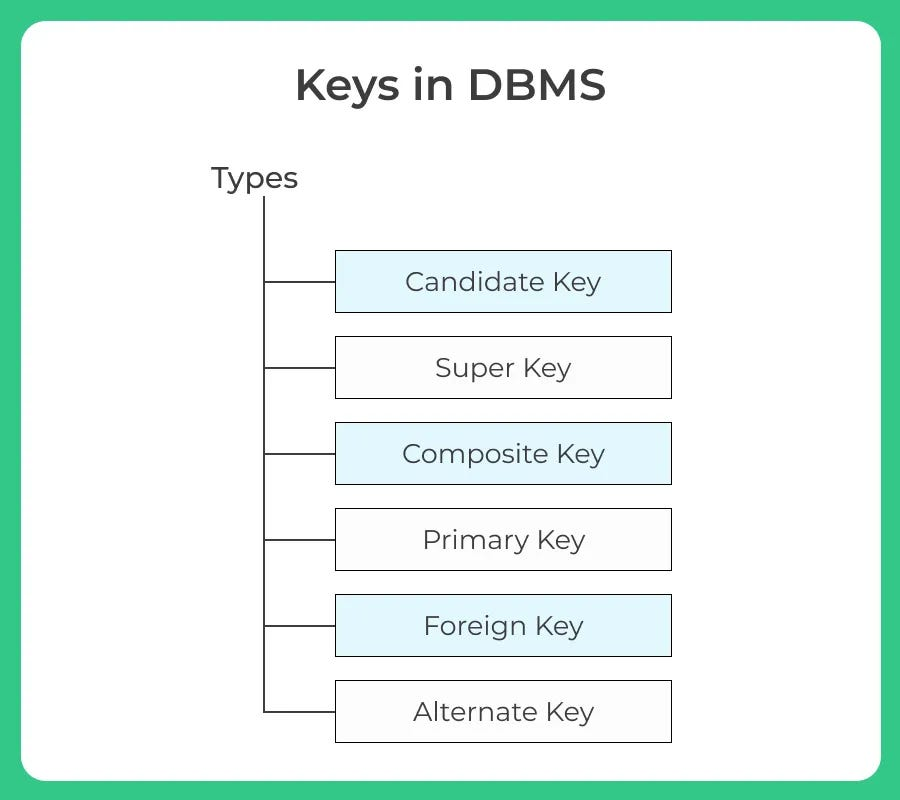

Data is the raw fact about anything which is unprocessed, un-interpreted or unorganized, but able to organize into useful information. For Example: Hari, Manager, Pokhara, 5 etc.Data is a collection of raw information. Here in DBMS system data is specially used for the further process we are trying to do. Specially for the managemnent of those data by using DBMS as a initial inforamtion data is used.
When raw data is processed and changed it into meaning data, then the meaningful data is called information. Information is processed, interpreted or organized data. For Example: Ram, Student of MMC, Manager of Mega Bank, etc.
A multimedia database system is comprised of a multimedia database management system (MM-DBMS) that manages a multimedia database, which is a database containing multimedia data. Multimedia data may include structured data as well as semi structured and unstructured data such as voice, video, text, and images. That is, an MM-DBMS provides support for storing, manipulating, and retrieving multimedia data from a multimedia database. In a certain sense, a multimedia database system is a type of heterogeneous database system because it manages heterogeneous data types.
A data dictionary in Database Management System (DBMS) can be defined as a component that stores the collection of names, definitions, and attributes for data elements that are being used in a database. The Data Dictionary stores metadata, i.e., data about the database. These data elements are then used as part of a database, research project, or information system.
A database is an organized collection of data, so that it can be easily accessed and managed. The main purpose of the database is to operate a large amount of information by storing, retrieving, and managing data. There are many dynamic websites on the World Wide Web nowadays which are handled through databases. For example, a model that checks the availability of rooms in a hotel. It is an example of a dynamic website that uses a database.
Table is a simple form of data storage. A table is also considered as a convenient representation of relations.
Lets see an example of an employee table: 
A tuple in a database management system is one record in the context of relational databases (one row). You can compare the data present in the database with a spreadsheet, with rows (known as tuples) and columns (known as fields or attributes) representing various data types.
A database field refers to a set of values arranged in a table and has the same data type. A field is also known as a column or attribute.
It is not necessary for the values included in a field to be in the form of text alone, as this is not a requirement. Some databases have the capability of having fields that contain images, files, and other types of media, while others have the capability of having data that links to other files that can be accessed by clicking on the field data.
In every database system, you can find three modes of fields. They are:
Required
Calculated
Optional
Required Fields
These fields must be filled out, and skipping them is not an option. You will be presented with an error notice if you do not fill in this field with a value or entry before continuing. If you do not include this information, your database will not be comprehensive.
Calculated Fields
These fields do not require an entry, but they will be automatically calculated by the system from the existing values in other fields. Usually, this type of field will have a formula embedded in it and if you give the range of data to be taken, it will automatically fill the fields with it.
Optional Fields
It is not a condition to fill these up and even if you leave these empty, you will not get an error message. Your database will be complete even without the completion of these fields. Fields are also classified according to the length of the value entered into them. You can have Fixed length fields and Variable Length fields.
In database management, a domain is a set of values that can be stored in a column of a database table. A domain is usually defined by a column's data type, which determines the kind of values that can be stored in the column. For example, a column with a data type of INTEGER can only store numeric values.
There are three main types of domains in DBMS: the data domain, the attribute domain, and the relationship domain.
The data domain is the set of all possible values that can be stored in a database. This includes both atomic values (e.g., integers, strings, dates) and complex values (e.g., images, documents). The data domain is typically constrained by the data type of the attribute or column in which the value is stored.
The attribute domain is the set of all possible values that can be assigned to an attribute or column. For example, if an attribute represents a person's age, then its domain would be constrained by the range of ages that people can have. Similarly, if an attribute represents a person's name, then its domain would be constrained by the set of all possible names.
The relationship domain is the set of all possible relationships between two or more entities. For example, if we have a database of employees and departments, then the relationship between an employee and a department would be represented by a foreign key in the employee table that references the primary key of the department table.
Constraints in DBMS (Database Management Systems) are rules or conditions that are applied to the data within a database to ensure data integrity, consistency, and adherence to business rules. They define limitations and requirements that the data must meet, thereby preventing the entry of invalid or inconsistent data. Constraints serve as a set of predefined rules that govern the behavior and relationships of the data in a database, helping to maintain its accuracy and reliability.
We use a key for defining various types of integrity constraints in a database. A table, on the other hand, represents a collection of the records of various events for any relation. Now, there might be thousands of these records, and some of these might even be duplicated.
Thus, we need a way in which one can identify all of these records uniquely and separately, i.e., without any duplicates. This hassle is removed with the help of keys.
Keys are of seven broad types in DBMS:

1. Primary Key
The primary key refers to a column or a set of columns of a table that helps us identify all the records uniquely present in that table.
2. Super Key
A super key refers to the set of all those keys that help us uniquely identify all the rows present in a table.
3. Candidate Key
The candidate keys refer to those attributes that identify rows uniquely in a table. In a table, we select the primary key from a candidate key.
4. Alternate Key
As we have stated above, any table can consist of multiple choices for the primary key. But, it can only choose one. Thus, all those keys that did not become a primary key are known as alternate keys.
5. Foreign Key
We use a foreign key to establish relationships between two available tables. The foreign key would require every value present in a column/set of columns to match the referential table’s primary key.
6. Composite Key
The composite key refers to a set of multiple attributes that help us uniquely identify every tuple present in a table.
7. Unique Key
A unique key refers to a column/a set of columns that identify every record uniquely in a table. All the values in this key would have to be unique.
These are the basic terms used in DBMS. You must be able to understand after studying it.